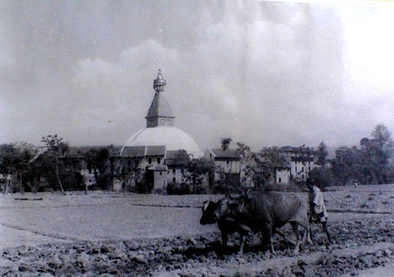
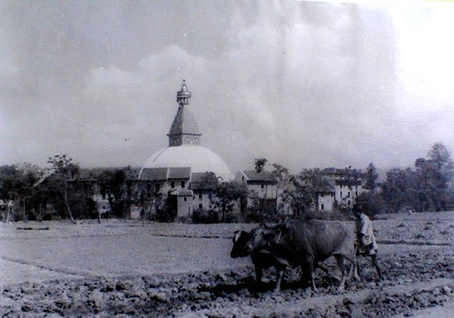

Our town traces its history back to the early days of lumbering in Michigan.
Majorville is located on Lake Michigan where Pine Creek empties into Lake Michigan just south of Esky Road. Today this is one of the most popular swimming beaches in the Lakeshore, but in the 1870s and 1880s, Majorville was a booming lumber town!
Following the U. S. Civil War, the veterans returned home, and John Major settled with his wife Julia and daughter Anna in Northern Michigan., in late 1854, purchased the 122 acres By the late 1850sLumber speculators were on their way north as the forests near Grand Haven and Muskegon were harvested.
Dr. Arthur O’Leary recognized the financial potential of the timber stands around Pine Creek.
He began buying up large tracts of forest and made plans to build a sawmill.The sawmill was built on the south side of Pine Creek not far from Lake Michigan Mill operation began in 1869 for the purpose of producing white pine lumber, and the town of Majorville was established.
 
